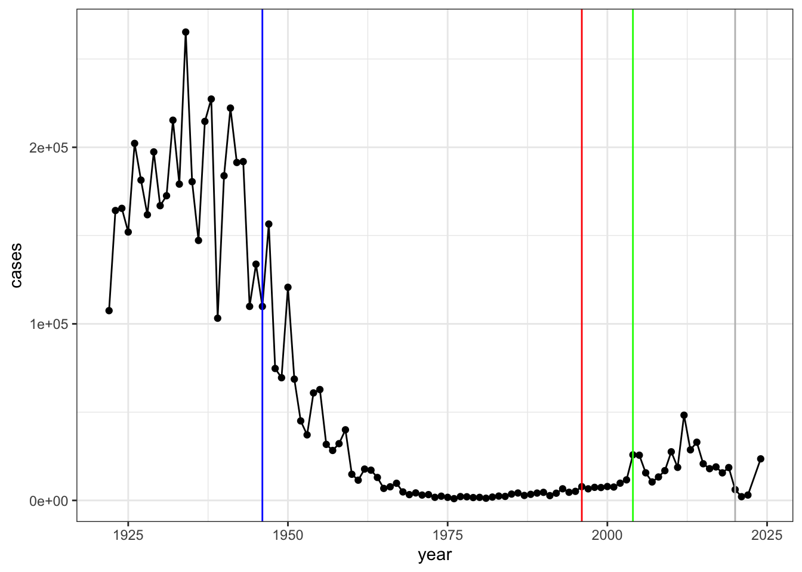
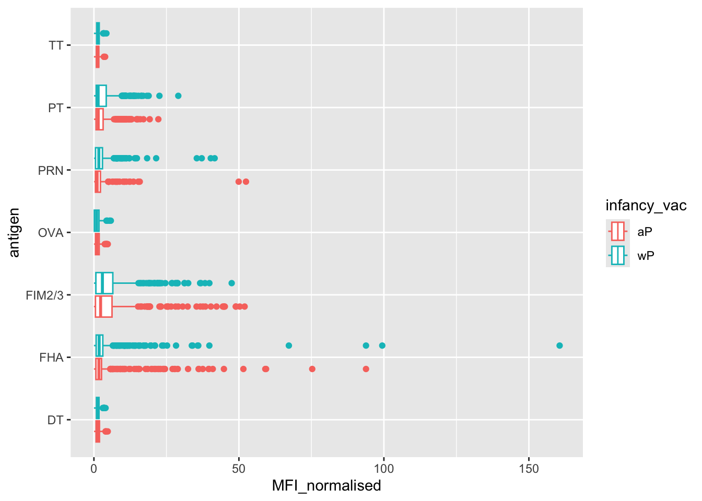
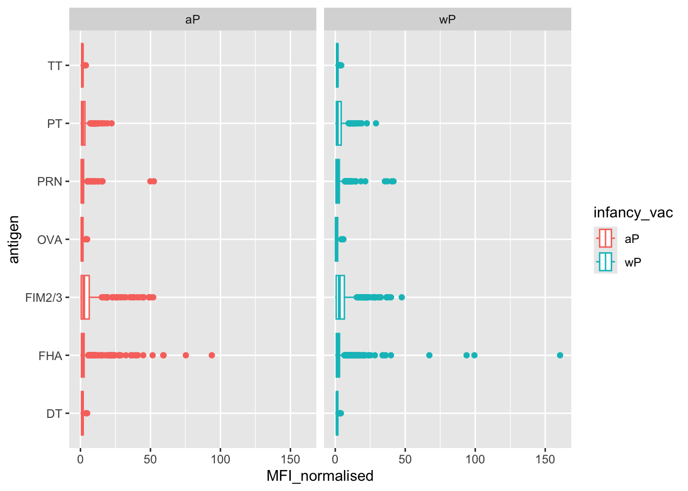
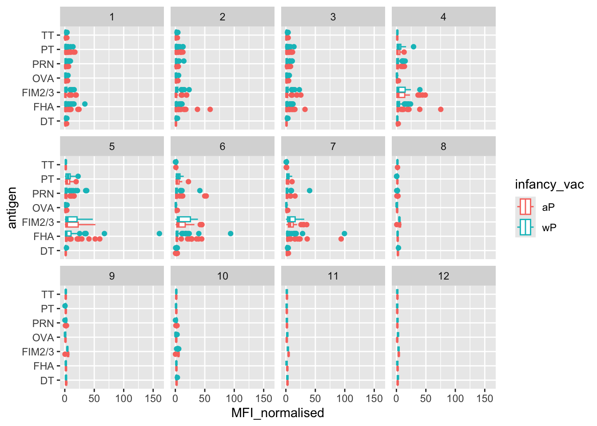

cdc<-data.frame(
year = c(1922L,1923L,1924L,1925L,1926L,
1927L,1928L,1929L,1930L,1931L,1932L,
1933L,1934L,1935L,1936L,1937L,1938L,
1939L,1940L,1941L,1942L,1943L,
1944L,1945L,1946L,1947L,1948L,1949L,
1950L,1951L,1952L,1953L,1954L,1955L,
1956L,1957L,1958L,1959L,1960L,
1961L,1962L,1963L,1964L,1965L,1966L,
1967L,1968L,1969L,1970L,1971L,1972L,
1973L,1974L,1975L,1976L,1977L,1978L,
1979L,1980L,1981L,1982L,1983L,
1984L,1985L,1986L,1987L,1988L,1989L,
1990L,1991L,1992L,1993L,1994L,1995L,
1996L,1997L,1998L,1999L,2000L,
2001L,2002L,2003L,2004L,2005L,2006L,
2007L,2008L,2009L,2010L,2011L,2012L,
2013L,2014L,2015L,2016L,2017L,2018L,
2019L,2020L,2021L,2022L,2024L),
cases= c(107473,164191,165418,152003,
202210,181411,161799,197371,166914,
172559,215343,179135,265269,180518,
147237,214652,227319,103188,183866,
222202,191383,191890,109873,133792,
109860,156517,74715,69479,120718,68687,
45030,37129,60886,62786,31732,28295,
32148,40005,14809,11468,17749,
17135,13005,6799,7717,9718,4810,3285,
4249,3036,3287,1759,2402,1738,
1010,2177,2063,1623,1730,1248,1895,
2463,2276,3589,4195,2823,3450,4157,
4570,2719,4083,6586,4617,5137,
7796,6564,7405,7298,7867,7580,9771,
11647,25827,25616,15632,10454,13278,
16858,27550,18719,48277,28639,
32971,20762,17972,18975,15609,18617,
6124,2116,3044,23544)
)Class 15: Pertussis Mini Project
CDC tracks Pertussis cases here
Web Scrapping
We need to scrape this data for R. Install datapasta
cdc year cases
1 1922 107473
2 1923 164191
3 1924 165418
4 1925 152003
5 1926 202210
6 1927 181411
7 1928 161799
8 1929 197371
9 1930 166914
10 1931 172559
11 1932 215343
12 1933 179135
13 1934 265269
14 1935 180518
15 1936 147237
16 1937 214652
17 1938 227319
18 1939 103188
19 1940 183866
20 1941 222202
21 1942 191383
22 1943 191890
23 1944 109873
24 1945 133792
25 1946 109860
26 1947 156517
27 1948 74715
28 1949 69479
29 1950 120718
30 1951 68687
31 1952 45030
32 1953 37129
33 1954 60886
34 1955 62786
35 1956 31732
36 1957 28295
37 1958 32148
38 1959 40005
39 1960 14809
40 1961 11468
41 1962 17749
42 1963 17135
43 1964 13005
44 1965 6799
45 1966 7717
46 1967 9718
47 1968 4810
48 1969 3285
49 1970 4249
50 1971 3036
51 1972 3287
52 1973 1759
53 1974 2402
54 1975 1738
55 1976 1010
56 1977 2177
57 1978 2063
58 1979 1623
59 1980 1730
60 1981 1248
61 1982 1895
62 1983 2463
63 1984 2276
64 1985 3589
65 1986 4195
66 1987 2823
67 1988 3450
68 1989 4157
69 1990 4570
70 1991 2719
71 1992 4083
72 1993 6586
73 1994 4617
74 1995 5137
75 1996 7796
76 1997 6564
77 1998 7405
78 1999 7298
79 2000 7867
80 2001 7580
81 2002 9771
82 2003 11647
83 2004 25827
84 2005 25616
85 2006 15632
86 2007 10454
87 2008 13278
88 2009 16858
89 2010 27550
90 2011 18719
91 2012 48277
92 2013 28639
93 2014 32971
94 2015 20762
95 2016 17972
96 2017 18975
97 2018 15609
98 2019 18617
99 2020 6124
100 2021 2116
101 2022 3044
102 2024 23544Now plot using ggplot2: Call ggplot, add cdc inside ggplot, add aes, x and y axes, and then geom_point() and geom_line()
library(ggplot2)
baseplot<-ggplot(cdc)+
aes(year,cases)+
geom_point()+
geom_line()
baseplot
Let’s add the data of wP vaccine roll out, 1946 (blue) Let’s add the data of aP vaccine roll out, 1996 (red) Now let’s add 2020 and see what happened to cases that year (gray) Now, let’s see the first spike after aP roll out, 2004
baseplot+
theme_bw()+
geom_vline(xintercept = 1946, col="blue")+
geom_vline(xintercept = 1996, col="red")+
geom_vline(xintercept = 2020, col="gray")+
geom_vline(xintercept = 2004, col="green")
CMI-PB(Computational Models of Immunity-Pertussis Boost)
This projects collects and makes freely available data about the immune response to Pertussis vaccination Access this data via an API which returns JSON format (key:vale pairs) We can use jsonlite package and it’s read_json() function
library(jsonlite)
subject<- read_json("subject", simplifyVector = TRUE)
head(subject) subject_id infancy_vac biological_sex ethnicity race
1 1 wP Female Not Hispanic or Latino White
2 2 wP Female Not Hispanic or Latino White
3 3 wP Female Unknown White
4 4 wP Male Not Hispanic or Latino Asian
5 5 wP Male Not Hispanic or Latino Asian
6 6 wP Female Not Hispanic or Latino White
year_of_birth date_of_boost dataset
1 1986-01-01 2016-09-12 2020_dataset
2 1968-01-01 2019-01-28 2020_dataset
3 1983-01-01 2016-10-10 2020_dataset
4 1988-01-01 2016-08-29 2020_dataset
5 1991-01-01 2016-08-29 2020_dataset
6 1988-01-01 2016-10-10 2020_datasettable(subject$infancy_vac)
aP wP
87 85 table(subject$race, subject$biological_sex)
Female Male
American Indian/Alaska Native 0 1
Asian 32 12
Black or African American 2 3
More Than One Race 15 4
Native Hawaiian or Other Pacific Islander 1 1
Unknown or Not Reported 14 7
White 48 32table(subject$dataset)
2020_dataset 2021_dataset 2022_dataset 2023_dataset
60 36 22 54 specimen<-read_json("specimen.json", simplifyVector = TRUE)
ab_titer<-read_json("plasma_ab_titer.json", simplifyVector = TRUE)head(specimen) specimen_id subject_id actual_day_relative_to_boost
1 1 1 -3
2 2 1 1
3 3 1 3
4 4 1 7
5 5 1 11
6 6 1 32
planned_day_relative_to_boost specimen_type visit
1 0 Blood 1
2 1 Blood 2
3 3 Blood 3
4 7 Blood 4
5 14 Blood 5
6 30 Blood 6head(ab_titer) specimen_id isotype is_antigen_specific antigen MFI MFI_normalised
1 1 IgE FALSE Total 1110.21154 2.493425
2 1 IgE FALSE Total 2708.91616 2.493425
3 1 IgG TRUE PT 68.56614 3.736992
4 1 IgG TRUE PRN 332.12718 2.602350
5 1 IgG TRUE FHA 1887.12263 34.050956
6 1 IgE TRUE ACT 0.10000 1.000000
unit lower_limit_of_detection
1 UG/ML 2.096133
2 IU/ML 29.170000
3 IU/ML 0.530000
4 IU/ML 6.205949
5 IU/ML 4.679535
6 IU/ML 2.816431We want to “join” these tables so we have all the info we need about a given antibody measurement
library(dplyr)
Attaching package: 'dplyr'The following objects are masked from 'package:stats':
filter, lagThe following objects are masked from 'package:base':
intersect, setdiff, setequal, unionmeta<-inner_join(subject,specimen)Joining with `by = join_by(subject_id)`head(meta) subject_id infancy_vac biological_sex ethnicity race
1 1 wP Female Not Hispanic or Latino White
2 1 wP Female Not Hispanic or Latino White
3 1 wP Female Not Hispanic or Latino White
4 1 wP Female Not Hispanic or Latino White
5 1 wP Female Not Hispanic or Latino White
6 1 wP Female Not Hispanic or Latino White
year_of_birth date_of_boost dataset specimen_id
1 1986-01-01 2016-09-12 2020_dataset 1
2 1986-01-01 2016-09-12 2020_dataset 2
3 1986-01-01 2016-09-12 2020_dataset 3
4 1986-01-01 2016-09-12 2020_dataset 4
5 1986-01-01 2016-09-12 2020_dataset 5
6 1986-01-01 2016-09-12 2020_dataset 6
actual_day_relative_to_boost planned_day_relative_to_boost specimen_type
1 -3 0 Blood
2 1 1 Blood
3 3 3 Blood
4 7 7 Blood
5 11 14 Blood
6 32 30 Blood
visit
1 1
2 2
3 3
4 4
5 5
6 6One last joining of meta and ab_titer
abdata<- inner_join(ab_titer,meta)Joining with `by = join_by(specimen_id)`head(abdata) specimen_id isotype is_antigen_specific antigen MFI MFI_normalised
1 1 IgE FALSE Total 1110.21154 2.493425
2 1 IgE FALSE Total 2708.91616 2.493425
3 1 IgG TRUE PT 68.56614 3.736992
4 1 IgG TRUE PRN 332.12718 2.602350
5 1 IgG TRUE FHA 1887.12263 34.050956
6 1 IgE TRUE ACT 0.10000 1.000000
unit lower_limit_of_detection subject_id infancy_vac biological_sex
1 UG/ML 2.096133 1 wP Female
2 IU/ML 29.170000 1 wP Female
3 IU/ML 0.530000 1 wP Female
4 IU/ML 6.205949 1 wP Female
5 IU/ML 4.679535 1 wP Female
6 IU/ML 2.816431 1 wP Female
ethnicity race year_of_birth date_of_boost dataset
1 Not Hispanic or Latino White 1986-01-01 2016-09-12 2020_dataset
2 Not Hispanic or Latino White 1986-01-01 2016-09-12 2020_dataset
3 Not Hispanic or Latino White 1986-01-01 2016-09-12 2020_dataset
4 Not Hispanic or Latino White 1986-01-01 2016-09-12 2020_dataset
5 Not Hispanic or Latino White 1986-01-01 2016-09-12 2020_dataset
6 Not Hispanic or Latino White 1986-01-01 2016-09-12 2020_dataset
actual_day_relative_to_boost planned_day_relative_to_boost specimen_type
1 -3 0 Blood
2 -3 0 Blood
3 -3 0 Blood
4 -3 0 Blood
5 -3 0 Blood
6 -3 0 Blood
visit
1 1
2 1
3 1
4 1
5 1
6 1nrow(abdata)[1] 52576table(abdata$isotype)
IgE IgG IgG1 IgG2 IgG3 IgG4
6698 5389 10117 10124 10124 10124 table(abdata$antigen)
ACT BETV1 DT FELD1 FHA FIM2/3 LOLP1 LOS Measles OVA
1970 1970 4978 1970 5372 4978 1970 1970 1970 4978
PD1 PRN PT PTM Total TT
1970 5372 5372 1970 788 4978 Let’s begin with IgG
igg<- filter(abdata,isotype=="IgG")
head(igg) specimen_id isotype is_antigen_specific antigen MFI MFI_normalised
1 1 IgG TRUE PT 68.56614 3.736992
2 1 IgG TRUE PRN 332.12718 2.602350
3 1 IgG TRUE FHA 1887.12263 34.050956
4 19 IgG TRUE PT 20.11607 1.096366
5 19 IgG TRUE PRN 976.67419 7.652635
6 19 IgG TRUE FHA 60.76626 1.096457
unit lower_limit_of_detection subject_id infancy_vac biological_sex
1 IU/ML 0.530000 1 wP Female
2 IU/ML 6.205949 1 wP Female
3 IU/ML 4.679535 1 wP Female
4 IU/ML 0.530000 3 wP Female
5 IU/ML 6.205949 3 wP Female
6 IU/ML 4.679535 3 wP Female
ethnicity race year_of_birth date_of_boost dataset
1 Not Hispanic or Latino White 1986-01-01 2016-09-12 2020_dataset
2 Not Hispanic or Latino White 1986-01-01 2016-09-12 2020_dataset
3 Not Hispanic or Latino White 1986-01-01 2016-09-12 2020_dataset
4 Unknown White 1983-01-01 2016-10-10 2020_dataset
5 Unknown White 1983-01-01 2016-10-10 2020_dataset
6 Unknown White 1983-01-01 2016-10-10 2020_dataset
actual_day_relative_to_boost planned_day_relative_to_boost specimen_type
1 -3 0 Blood
2 -3 0 Blood
3 -3 0 Blood
4 -3 0 Blood
5 -3 0 Blood
6 -3 0 Blood
visit
1 1
2 1
3 1
4 1
5 1
6 1Make a boxplot of IgG antigen levels-this will be a plot of MFI vs antigen
igg_boxplot<-ggplot(igg)+
aes(MFI_normalised, antigen, col=infancy_vac)+
geom_boxplot()
igg_boxplot
Ideally, I would like to see how these ab levels change over time relative to the booster shot
table(abdata$visit)
1 2 3 4 5 6 7 8 9 10 11 12
8280 8280 8420 6565 6565 6210 5810 815 735 686 105 105 igg_boxplot+
facet_wrap(~infancy_vac)
igg_boxplot+
facet_wrap(~visit)
abdata.21 <- abdata %>% filter(dataset == "2021_dataset")
abdata.21 %>% filter(isotype == "IgG", antigen == "PT") %>%
ggplot()+
aes(x=planned_day_relative_to_boost, y=MFI_normalised, col=infancy_vac,group=subject_id)+
geom_point()+
geom_line()+
geom_vline(xintercept=0, linetype="dashed") +
geom_vline(xintercept=14, linetype="dashed") +
labs(title="2021 dataset IgG PT",
subtitle = "Dashed lines indicate day 0 (pre-boost) and 14 (apparent peak levels)")